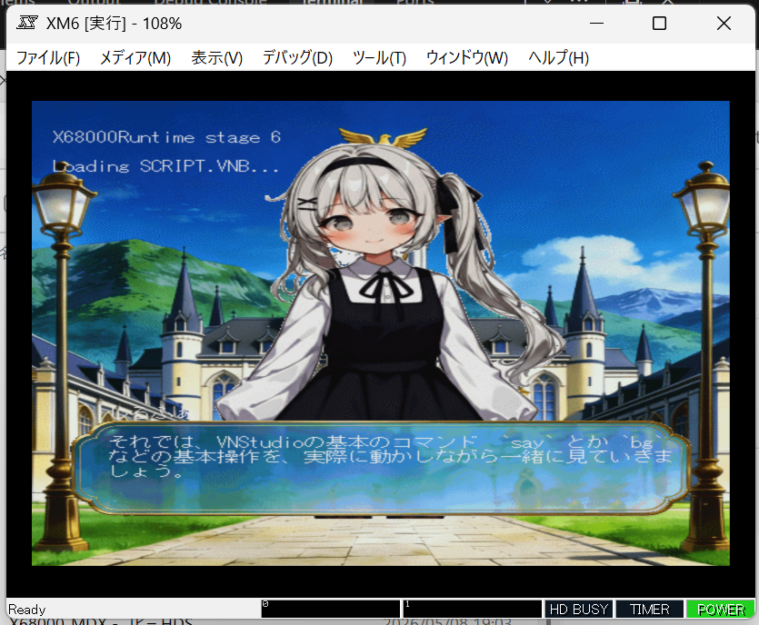
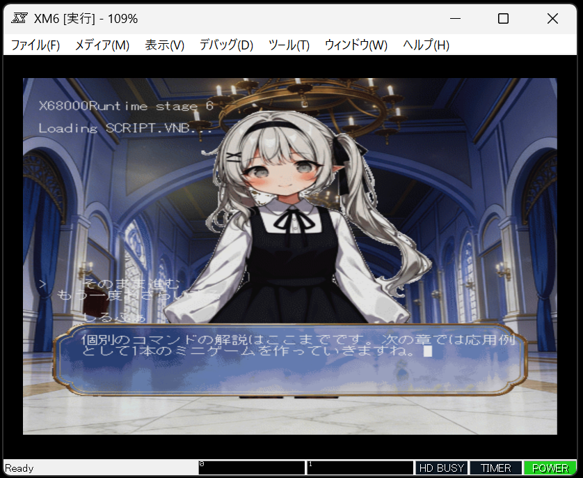
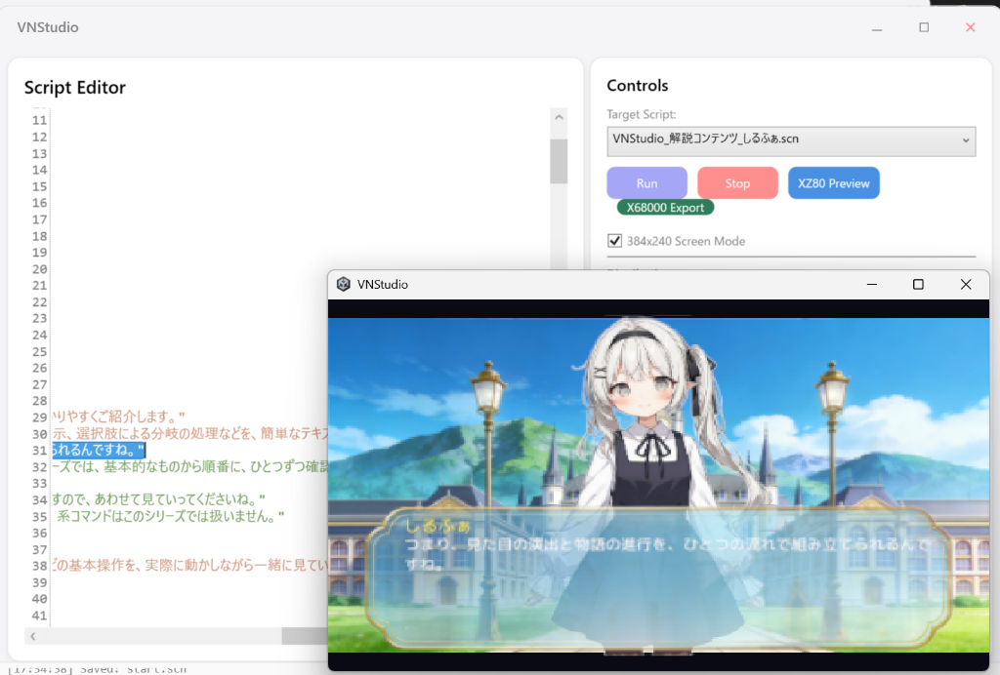
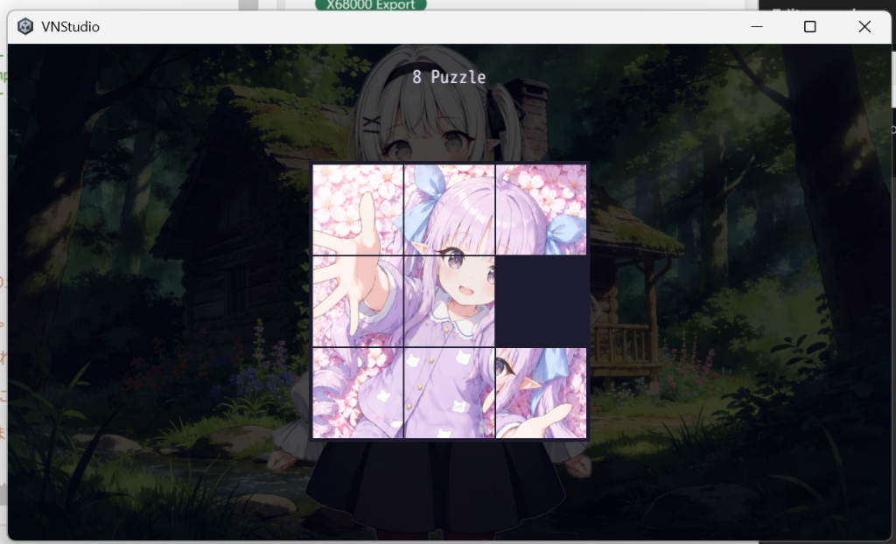

はじめに——進化し続けるエンジン
前回は、XZ80 VMのコア実装完了という大きな節目を報告した。 あれから間を置かず、開発の重心はUnity側のランタイム——VNStudioそのものの進化へと移っている。
次期バージョン VNStudio 0.46β に向けて、 四つの新機能が並行して形になりつつある。 今回はその進捗を、それぞれの技術的な背景とともにお伝えしたい。
一つひとつは小さな進化でも、積み重なれば景色が変わる。
ツールの成長は、いつもそうだ。
第1章：X68000版ランタイム——もう一つの「夢のマシン」へ
Vol.5で掲げた「Write Once, Play Anywhere」—— 同じスクリプトがUnityでもレトロPCでも動く、という理念。 その到達先として、XZ80 VMと並ぶもう一つのターゲットを用意した。
X68000——。 シャープが1987年に送り出した、日本のホビーコンピューティング史に燦然と輝く名機。 MC68000 CPUと専用カスタムチップ群が織りなすその表現力は、 当時のアーケードゲームすら凌駕するほどだった。
このX68000の上で、VNStudioのスクリプトを走らせる——。 その試験実装に、今回着手した。
実機での動作を視野に入れつつ、まずはエミュレータ上でのランタイム動作を目標とし、 MC68000のアセンブラで記述したスクリプトインタプリタの基盤を構築している。 Z80版とは命令セットも設計思想も異なる16ビットCPUの上で、 同じスクリプトが——同じ物語が——息づくことを確認するための、第一歩だ。
Z80で描いた夢が、68000の大地にも根を下ろす。
「どこでも動く」は、単なるスローガンではない。実装で証明する。

sayコマンドによるテキスト表示が動作している場面。
第2章：384×240レトロモード——ピクセルに宿る温もり
Unity版ランタイムにも、進化が。 384×240ピクセルのレトロモードを実装した。
384×240——この解像度には意味がある。 Vol.8で設計したXZ80の画面解像度と同一であり、 Unity版でXZ80版の実装をほぼ同じ見た目で動作させるための重要な布石となる。
実装は、Camera.main.targetTextureに384×240のRenderTextureを割り当て、
それを画面全体に拡大表示する方式を採用した。
UIのreferenceResolutionも384×240に統一することで、
レイアウトの整合性を保ちながら、ドット絵らしい表示を実現している。
高解像度ディスプレイの中に、レトロなドット絵が息づく。 ノスタルジーではない、意図的な表現なのだ。

第3章：voiceコマンド——声に、専用の居場所を
ビジュアルノベルにおいて、ボイス（音声）は特別な存在だ。 BGMやSEとは異なり、テキストの一行一行に紐づき、 キャラクターの感情をダイレクトに伝える—— いわば「もう一つのテキスト」である。
これまでのVNStudioでは、音声再生にもBGMやSEと同じ汎用のplayコマンドを使っていた。
機能的には動作するが、スクリプト上での意図が曖昧になりがちだった。
0.46βでは、音声専用のvoiceコマンドを新設した。
voice sylfa_greeting_01
say しるふぁ "おはようございます！"
voiceの直後にsayを置く——それだけで、
テキスト表示と同時にボイスが再生され、テキスト送りで自動的に停止する。
スクリプトの可読性が上がり、演出の意図が一目で伝わるようになった。
さらに重要なのは、将来のボイス管理機能への拡張性だ。 専用コマンドとして独立させたことで、 ボイスの音量調整、再生中のリップシンク連動、 未再生ボイスのギャラリー管理といった機能を、 スクリプト文法を変えることなく後から追加できる。
小さなコマンドの独立が、未来の機能拡張の土台になる。
設計とは、いま見えているものだけでなく、
まだ見えていないものに備えることなのだ。
第4章：callコマンド拡張——スクリプトの中に「遊び」を埋め込む
VNStudioのスクリプトエンジンには、サブルーチン呼び出しのためのcallコマンドがある。
指定したラベルへジャンプし、returnで元の位置に戻る——
プログラミングにおける関数呼び出しと同じ概念である。
0.46βでは、このcallコマンドを試験的に拡張し、
スクリプトからミニゲームを呼び出せるようにしている。
その第一弾として実装したのが、8パズル（15パズルの3×3版）である。
# ビジュアルノベルの途中で、パズルに挑戦させる
say しるふぁ "じゃあ、ここでちょっとパズルに挑戦してみて！"
call puzzle8 shuffle=20
# パズル完了後、自動的にここに戻ってくる
say しるふぁ "お見事！クリアできたね！"
call puzzle8が実行されると、
画面上に8パズルのUIがオーバーレイ表示される。
shuffleパラメータでシャッフル回数を指定でき、
スクリプトで、パズル用の画像の指定・難易度の指定も可能にしている。
プレイヤーがパズルを解くと、自動的にcall元のスクリプトに制御が戻る。
物語の中に自然にインタラクティブな要素を組み込める——
これは、ビジュアルノベルの可能性を大きく広げる試みだ。

おわりに——積み重ねが、やがて跳躍になる
X68000版ランタイム、384×240レトロモード、voiceコマンド、callコマンド拡張——。 四つの進化は、それぞれ独立した機能でありながら、 一つの方向を向いている。
「表現の幅を広げ、届く場所を増やす」ということなのだ。
X68000版ランタイムは、スクリプトが走る世界をもう一つ増やした。 レトロモードは、視覚表現に新しい選択肢を加えた。 voiceコマンドは、音の演出をより意図的に扱えるようにした。 callコマンド拡張は、物語の中に遊びを埋め込む道を拓いた。
どれも派手な機能ではないかもしれない。 けれど、クリエイターの手元で「あ、これができるんだ」と感じてもらえる瞬間が、 一つでも増えることを願っている。
小さな進化の一つひとつが、やがて大きな跳躍の助走になる。
0.46βは、その助走路のまっただ中にある。
次の進捗報告では、これらの機能がさらに磨き上げられた姿を—— そして、RS Studioの始動という新たな物語を、お届けできるはずだ。